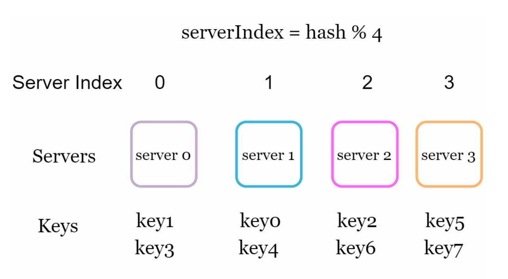
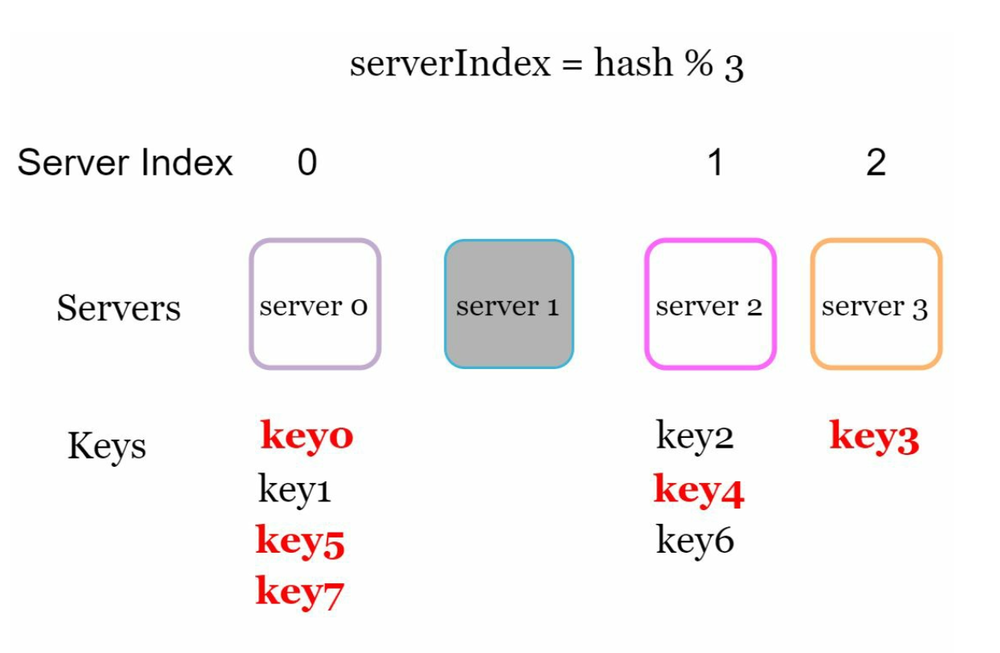
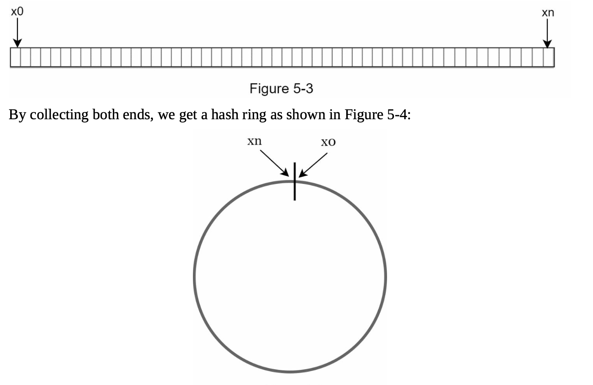
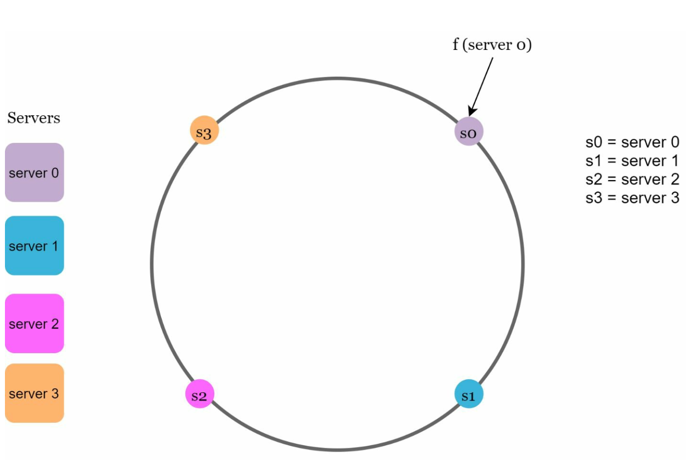
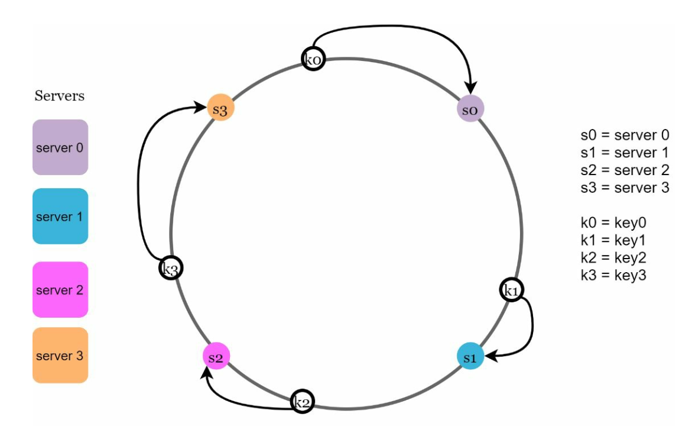
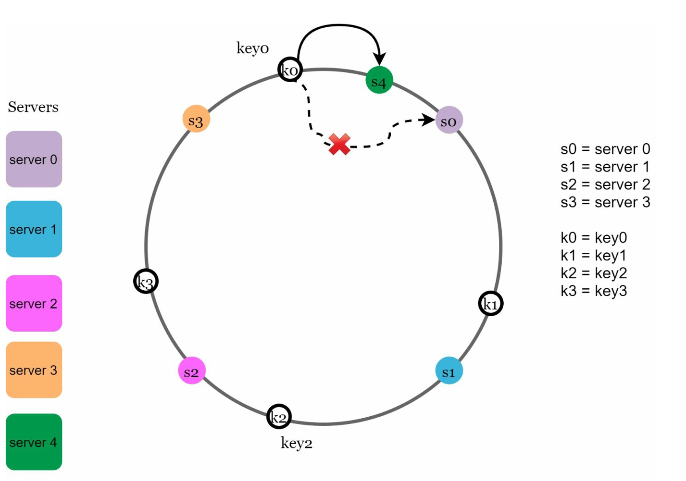
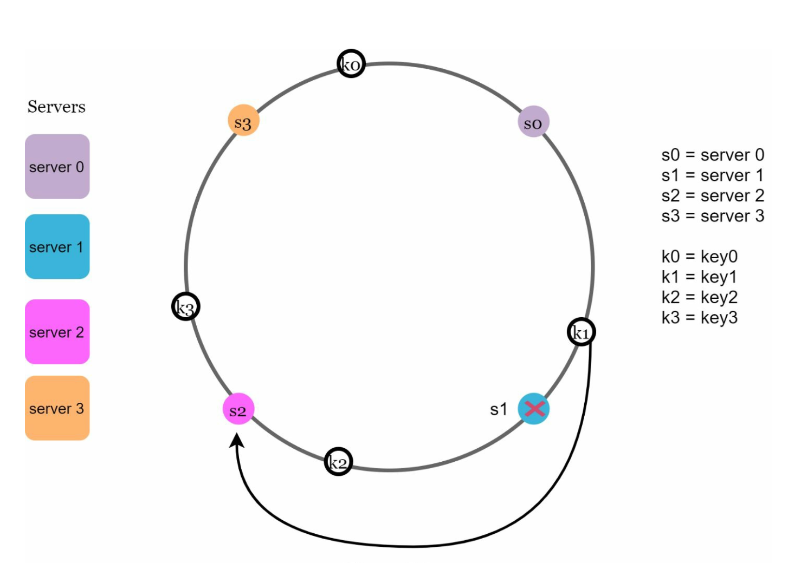
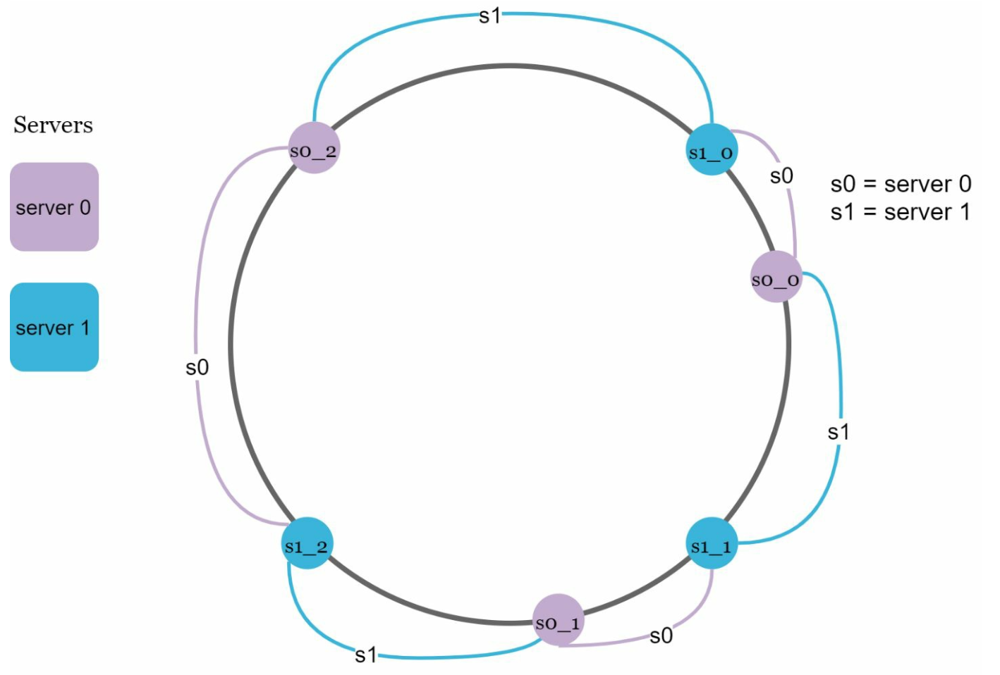
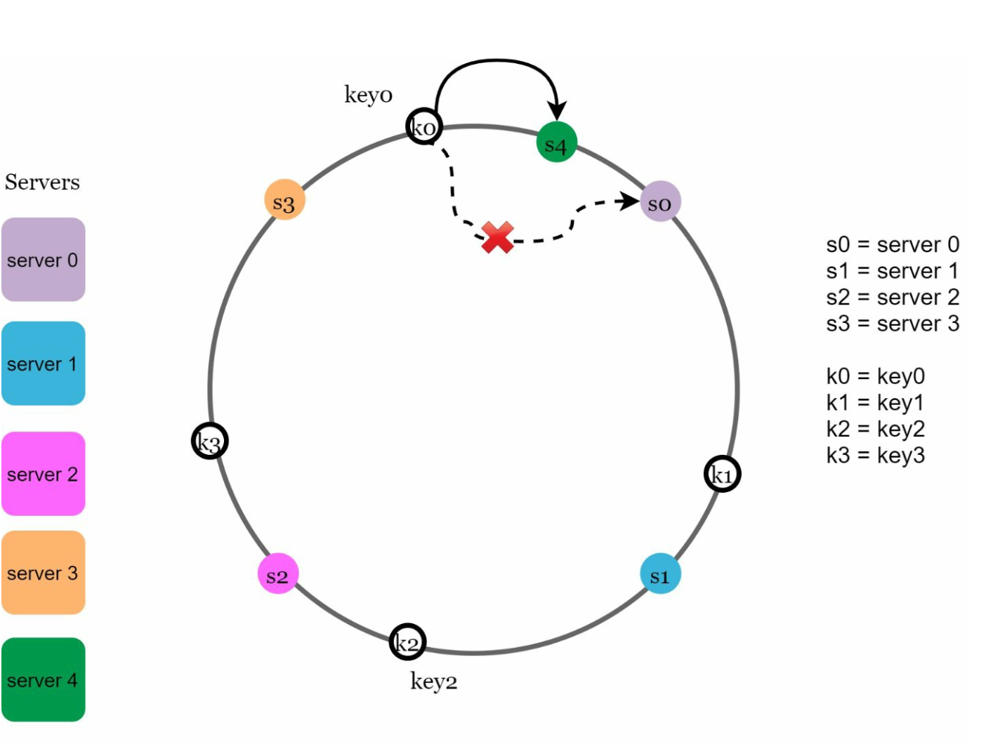
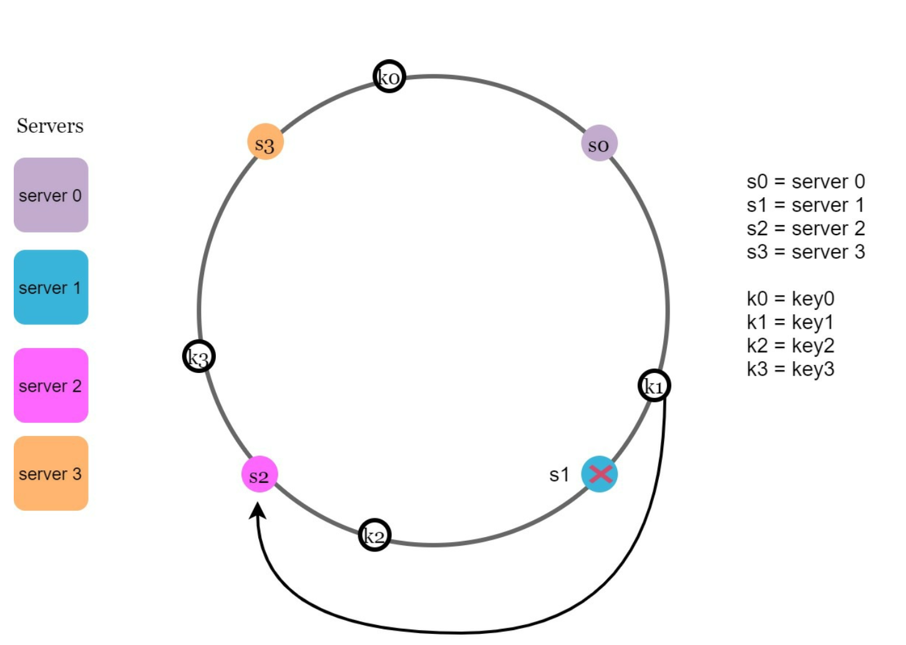

Design Consistent Hashing
Server add/remove pe saari keys shuffle hone se kaise bachein — hash ring, clockwise lookup aur virtual nodes ka pura logic.
Introduction
Horizontal scaling ke liye requests/data ko servers mein efficiently aur evenly baantna zaroori hai. Consistent hashing isi ka standard technique hai. Isse samajhne ke liye pehle wo problem dekho jo ye solve karta hai.
The rehashing problem
N cache servers hain to common tarika: serverIndex = hash(key) % N. Example: 4 servers, 8 keys.

serverIndex = hash % 4. Har column ek server (index 0–3) aur uske neeche jo keys map hui. Server 0 → key1, key3; Server 1 → key0, key4; Server 2 → key2, key6; Server 3 → key5, key7. Server pool fixed ho to distribution achha hai.Ye tab tak theek hai jab tak server pool ka size fixed hai. Ab server 1 offline ho gaya → N = 3. Hash same rahega, lekin % 3 ka result badal jaayega:

serverIndex = hash % 3. Server 1 grey (offline). Red keys (key0, key5, key7, key4, key3) wo hain jo apne purane server se hat gayi — sirf server 1 ki keys nahi, balki doosre servers ki keys bhi shuffle ho gayi. Result: cache misses ka storm.Matlab ek server gaya aur most keys redistribute ho gayi — sirf us server ki keys nahi. Clients galat servers se data maangenge → massive cache misses → DB pe load spike.
% N se % (N±1) pe jaate hi roughly (N−1)/N keys move hoti hain — 100 servers mein ~99% keys! Consistent hashing mein average sirf k/n keys move hoti hain (k = total keys, n = slots/servers).Consistent hashing: hash space aur hash ring
Definition (Wikipedia ke words mein): consistent hashing ek special hashing hai jisme hash table resize hone pe average sirf k/n keys remap hoti hain. Traditional hashing mein lagbhag saari.

Servers ko ring pe rakhna
Same hash function f se server ka IP ya naam hash karke ring pe place karo.

f(server) se ring pe jagah mili. Arrow dikhata hai f(server 0) ne s0 ki position decide ki. Servers ring pe evenly spaced hona zaroori nahi.Server lookup
Key ko bhi same function se ring pe hash karo (yahan modular operation nahi hai!). Key ka server = key ki position se clockwise chalo, pehla server jo mile.

Server add ya remove karna
Add

Server add karne pe sirf ek fraction of keys redistribute hoti hain.
Remove

Basic approach ke do issues
Basic algorithm (MIT ke Karger et al. ne introduce kiya): servers aur keys ko uniformly distributed hash function se ring pe map karo; key ka server = clockwise pehla server. Lekin:
- Uneven partition sizes: partition = do adjacent servers ke beech ka hash space. Server add/remove ke baad ek server ka partition bahut chhota aur doosre ka bahut bada ho sakta hai (e.g. s1 hata to s2 ka partition s0 aur s3 se double).
- Non-uniform key distribution: servers ring ke ek hisse mein cluster ho jaayein to most keys ek hi server pe aa sakti hain.
Solution: Virtual nodes (replicas)
Har real server ring pe multiple virtual nodes se represent hota hai. Server ke multiple partitions ho jaate hain.

- Virtual nodes badhao → key distribution zyada balanced, kyunki standard deviation chhota hota jata hai. Book ke referenced experiment mein 100–200 virtual nodes pe std deviation mean ka ~10% se ~5% tak aa jaata hai.
- Trade-off: zyada virtual nodes → ring metadata store karne ke liye zyada memory. Business requirement ke hisaab se tune karo.
- Bonus: heterogeneous hardware — powerful server ko zyada virtual nodes do, wo proportionally zyada load lega.
Affected keys kaise dhoondein
Server add hua

Server remove hua

Implementation sketch (Java)
class ConsistentHash<T> {
private final TreeMap<Long, T> ring = new TreeMap<>();
private final int vnodes;
void add(T server) { for (int i = 0; i < vnodes; i++) ring.put(hash(server + "#" + i), server); }
void remove(T server) { for (int i = 0; i < vnodes; i++) ring.remove(hash(server + "#" + i)); }
T get(String key) {
Map.Entry<Long, T> e = ring.ceilingEntry(hash(key)); // clockwise next
return (e != null ? e : ring.firstEntry()).getValue(); // wrap-around
}
}TreeMap.ceilingEntry O(log n) mein "clockwise pehla node" deta hai — interview mein ye ek line bahut impress karti hai.
Benefits aur real-world use
- Server add/remove pe minimum keys redistribute.
- Horizontal scaling easy, kyunki data evenly distributed.
- Hotspot mitigation: ek shard pe excessive access (celebrity problem, Chapter 01) — consistent hashing data ko evenly spread karke isko kam karta hai.
Notes ke real-world examples: Amazon Dynamo ka partitioning component, Apache Cassandra ka data partitioning, Discord chat application, Akamai CDN, Google Maglev network load balancer.
num_tokens setting = virtual nodes). Isse node add karne pe data bahut saare existing nodes se thoda-thoda stream hota hai, kisi ek pe bojh nahi. Contrast: Redis Cluster consistent hashing nahi, balki fixed 16384 hash slots use karta hai jo nodes ko assign hote hain — idea similar (minimum movement), mechanism alag.murmur2(key) % numPartitions karta hai — yaani modulo hashing. Isliye topic ke partitions badhane pe same key ka partition badal jaata hai aur per-key ordering toot sakti hai. Ye exactly rehashing problem hai!- Pehle problem: "
hash % Nmein N badalte hi ~saari keys move → cache miss storm." - Ring draw karo: 0 se 2160−1, servers aur keys same hash se, clockwise lookup.
- Add/remove ka affected range dikhao (anticlockwise till previous server).
- Do issues + virtual nodes; memory vs balance trade-off bolo.
- Real systems naam lo (Dynamo, Cassandra) aur Chapter 06 (KV store) se jodo — replication ke liye ring pe agle N distinct servers.
Common follow-up questions
Lookup ka time complexity?
Sorted structure (TreeMap / sorted array + binary search) mein O(log V), V = total virtual nodes.
Replication kaise karoge ring pe?
Key ke clockwise pehle N distinct physical servers pe copies (virtual nodes skip karo jo same physical server ke hain). Chapter 06 mein detail.
Hot key (ek hi key pe bahut traffic) consistent hashing solve karta hai?
Nahi — wo ek hi key ek hi server pe jaayegi. Iske liye key ko replicate/salt karo (key#1..key#k) ya local cache lagao.
Kitne virtual nodes?
Commonly 100–200 per server range discuss hoti hai; zyada = better balance, zyada metadata. Measure karke tune karo.
Key Takeaways
hash % Nserver count badalne pe lagbhag saari keys shuffle kar deta hai.- Consistent hashing: servers + keys ek ring pe, key → clockwise next server; sirf ~k/n keys move.
- Affected range = naye/hate server se anticlockwise previous server tak.
- Virtual nodes uneven partitions aur skew fix karte hain; zyada vnodes = kam std deviation, zyada memory.
- Dynamo, Cassandra, Discord, Akamai, Maglev — sab isko use karte hain.